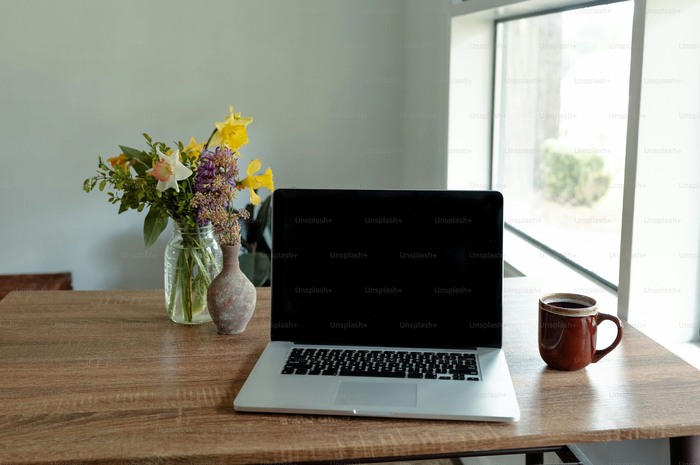

The Future of Work: Adapting to Remote and Hybrid Models
Welcome to the Mulyavardhan Insights blog, your trusted resource for driving business success through strategic innovation and sustainability. In this post, we'll uncover how practical and effective strategies can transform your business into a model of growth and responsible leadership.
The Eco-Friendly Foundation
Start by setting the foundation for an eco-friendly kitchen. Choose sustainable materials for countertops and flooring, such as bamboo or recycled glass. These materials not only look stunning but also have a lower environmental impact than traditional options.
Recycled Cabinetry Magic
Discover the charm of recycled cabinetry. GreenStone's unique approach to repurposing old materials breathes new life into your kitchen. Learn how incorporating recycled cabinets not only adds character but also contributes to reducing waste and conserving resources.
Energy-Efficient Appliances for a Greener Tomorrow
Upgrade your kitchen with the latest energy-efficient appliances. From smart refrigerators to induction cooktops, these innovations not only save you money on utility bills but also help reduce your carbon footprint. GreenStone's experts share tips on selecting the right appliances for your eco-friendly kitchen.
DIY Green Living Projects
Get your hands dirty with fun and easy DIY projects that promote sustainability. Learn how to create your own compost bin, grow herbs in your kitchen, or make eco-friendly cleaning solutions. These small changes can have a big impact on your kitchen's environmental footprint.
Conclusion
Transforming your business into a model of sustainability and efficiency doesn’t require sweeping changes. Small, strategic adjustments can lead to significant improvements in both your operational performance and environmental impact. Mulyavardhan is here to guide you on this journey, offering expert advice and practical insights to help you unlock your business's full potential. Stay tuned to our blog for more strategies and tips on how to drive growth while fostering a sustainable future. Let’s build a stronger, more responsible business landscape, one step at a time.